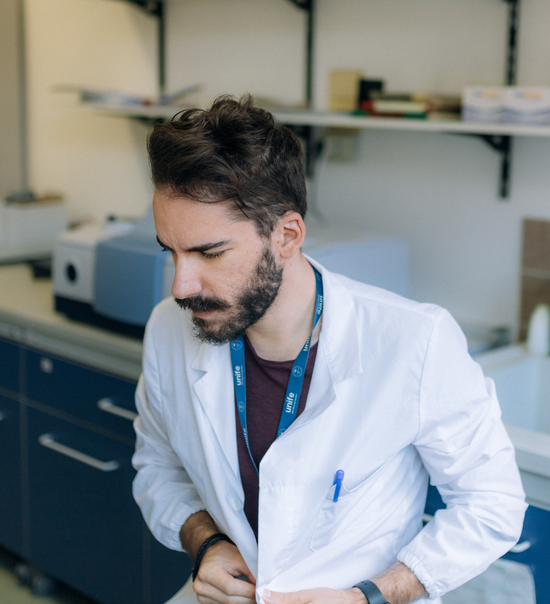

Biocatalisi e biotrasformazioni
Sviluppo di processi selettivi basati su enzimi per la sintesi di molecole ad alto valore aggiunto, con attenzione a resa, selettività e sostenibilità.
Sono Federico Zappaterra, ricercatore in Chimica Industriale all'Università di Ferrara. Mi occupo di biocatalisi, chimica sostenibile e processi bio-based, con un interesse forte per la didattica universitaria, la divulgazione scientifica e l'uso intelligente degli strumenti digitali e dell'intelligenza artificiale.

Profilo
Ricercatore, docente, divulgatore
Un percorso che unisce ricerca scientifica, didattica universitaria e comunicazione digitale.
Chi sono
Lavoro all'intersezione tra ricerca applicata, chimica sostenibile e trasferimento di conoscenza. In ambito scientifico mi occupo di processi biocatalitici, valorizzazione di molecole bioattive, enzimi immobilizzati e strategie sperimentali per l'ottimizzazione di processo.
Parallelamente, nella didattica e nella divulgazione, mi interessa rendere la scienze più comprensibile, sulla base di struttura, metodo e pensiero critico.
Per questo integro anche temi come presentazioni efficaci, strumenti digitali, workflow accademici e intelligenza artificiale applicata allo studio e alla comunicazione scientifica.
Ricerca
Aree in cui concentro attività sperimentale, ottimizzazione di processo e progettazione scientifica.
Sviluppo di processi selettivi basati su enzimi per la sintesi di molecole ad alto valore aggiunto, con attenzione a resa, selettività e sostenibilità.
Studio di sistemi enzimatici, in particolare lipasi, per esterificazioni, idrolisi e trasformazioni di interesse industriale e bio-based.
Processi orientati alla green chemistry, alla bioeconomia e alla valorizzazione di risorse rinnovabili in una prospettiva concreta di innovazione industriale.
Progettazione di supporti e strategie di immobilizzazione per migliorare stabilità, riutilizzo e robustezza dei biocatalizzatori.
Uso del docking molecolare per interpretare interazioni enzima-substrato e supportare la razionalizzazione dei risultati sperimentali.
Approcci statistici e sperimentali per l'ottimizzazione robusta di processo, con particolare attenzione alle variabili critiche e alle interazioni.
Selezione aggiornata delle pubblicazioni più recenti, con accesso diretto agli articoli tramite DOI o pagina dell’editore.
Caricamento pubblicazioni da ORCID...
Didattica
La didattica è il luogo in cui si costruiscono comprensione, rigore e autonomia intellettuale.
Approcci per insegnare la chimica con maggiore chiarezza, struttura e attenzione ai processi cognitivi.
Uso strategico di slide, esempi, sequenza narrativa e gerarchia visiva per spiegare bene contenuti scientifici complessi.
Formare studenti capaci di interpretare dati, riconoscere limiti metodologici e ragionare oltre la memorizzazione passiva.
Tradurre il rigore della ricerca in linguaggi più accessibili senza svuotarlo di precisione e complessità reale.
YouTube e divulgazione
Uno spazio in cui la divulgazione incontra l'utilità concreta. Il canale unisce chimica, strategie di studio, intelligenza artificiale, strumenti digitali e riflessioni su come imparare e comunicare meglio.
Playlist YouTube
Contenuti pensati per studenti e ricercatori che vogliono integrare strumenti intelligenti senza cadere in errore.
Apri la playlist su YouTubePlaylist YouTube
Contenuti su slide efficaci, struttura narrativa, design e comunicazione applicati a scuola, università e ricerca.
Apri la playlist su YouTubeAI, strumenti digitali e workflow
Mi interessa l'uso dell'AI non come gadget, ma come estensione ragionata del lavoro accademico: studio, sintesi, progettazione di presentazioni, produttività, scrittura e organizzazione dei flussi di lavoro per studenti e ricercatori.
Supporto alla comprensione, riformulazione, sintesi ragionata e costruzione di mappe concettuali più intelligenti.
Utilizzo consapevole di strumenti digitali per costruire slide, strutture narrative e materiali didattici più chiari ed efficaci.
Sistemi pratici per integrare tecnologia, organizzazione e comunicazione in attività di studio, ricerca e contenuto scientifico.
Collaborazioni
Il sito è pensato anche come punto di contatto per chi cerca un profilo capace di muoversi tra ricerca, didattica universitaria e divulgazione con un'impostazione seria e contemporanea.
Interventi su biocatalisi, sostenibilità, didattica della chimica, AI e comunicazione scientifica.
Progetti che avvicinano contenuti scientifici avanzati a studenti, pubblico ampio e contesti educativi.
Sviluppo di materiali, format e percorsi utili per università, eventi, canali digitali e formazione.
Collaborazioni che connettano chimica, innovazione, educazione e strumenti digitali.
Contatti
Qui puoi inserire i tuoi riferimenti reali e sostituire i placeholder. Per ora la struttura è pronta; manca solo il contenuto definitivo.
Email: federico.zappaterra@unife.it
Affiliazione: Università degli Studi di Ferrara · Dipartimento di Scienze Chimiche, Farmaceutiche ed Agrarie
YouTube: @biologicalgathering
LinkedIn: federico-zappaterra
Instagram: @zappabassplayer
Contatti rapidi
Per collaborazioni, seminari, workshop, attività didattiche o progetti di divulgazione scientifica, puoi contattarmi direttamente tramite email o profili online.